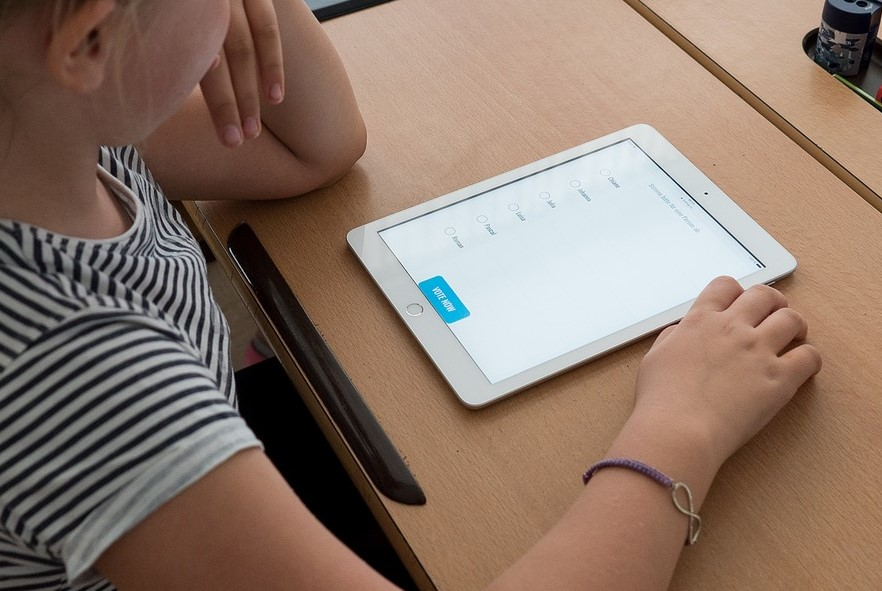

Les arguments en faveur des nouvelles technologies dans l'éducation

La tablette permet de nouvelles activités:
De nouvelles activités comme par exemple la création de BD ou la réalisation de reportages vidéos est rendue possible grâce à ces nouvelles technologies.
Les tablettes par exemple allègent les cartables:
Un cartable trop lourd peut causer des problèmes de santé, selon les préconisations de l'Éducation Nationale un cartable ne doit pas dépasser 10% du poids de l'enfant. Or la plupart des cartables pèsent 8 à 9 kilos ce qui est bien trop lourd.L'utilisation d'ordinateurs ou autres permet l'allègement des sacs car il n'y a plus besoin d'utiliser des manuels scolaires.
Les nouvelles technologies permettent de lutter contre l´échec scolaire:
En effet selon un rapport réalisé en 2016 par l´Institut Montaigne, le numérique permet de lutter contre l´échec scolaire. Le think tank recommande une généralisation des équipements dès l´école primaire et une pédagogie adaptée.